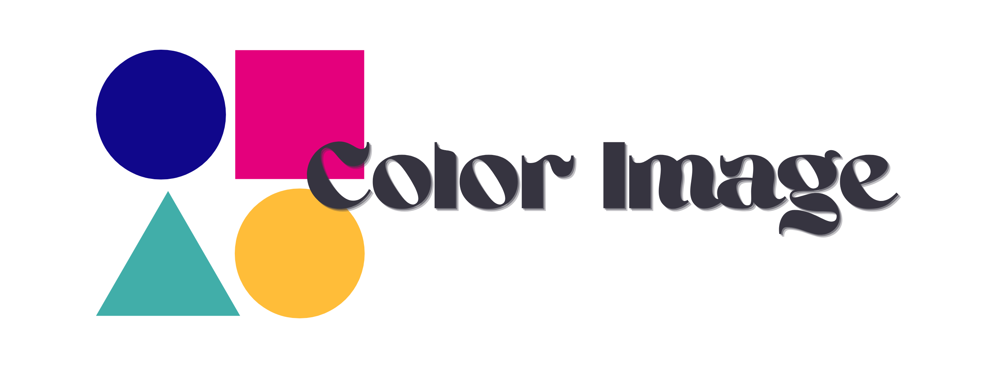

<div class="landing-page">
    <div class=header>
        

        <div class="header__buttons">
            <div *ngFor="let item of menuItems" class="button-container">
                <button mat-mini-fab (click)="execute(item.shortcutName)" matTooltip={{item.name}} color="primary">
                    <mat-icon>{{item.icon}}</mat-icon>
                </button>
            </div>
        </div>

    </div>

    <!-- <div class="header-buttons">

    </div> -->

    <div class="body">
        <div class="gallery">
            <app-gallery></app-gallery>
        </div>

        <div class="teams">
            <app-user-team-list></app-user-team-list>
        </div>
    </div>
</div>

<!-- TODO: Rajouter un effet visuel après le login ou register, genre un spinner ? Faire jouer le son à la fin du spinner?
    Edit: les confettis on va mettre, avec la snackbar. Le son se fait jouer après le login finalement. -->

<!-- Note (Paul) : Garder le footer et son css, peut être pratique pour la box de clavardage -->
<div class="footer">
</div>
